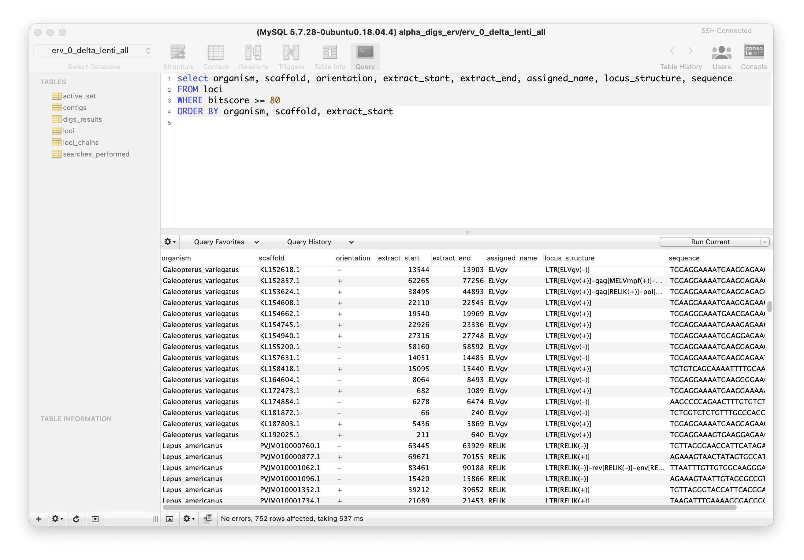

Explore the dark genome using BLAST and a relational database
The database-integrated genome-screening (DIGS) tool is an open source software framework for implementing 'in silico genome screening'. This entails using sequence similarity search tools to systematically search molecular sequence databanks for groups of related sequences, usually with a view to better understanding their evolution, and thereby gaining insights into their biology.
The DIGS tool allows users to leverage the combined power of sequence similarity searches and structured query language (SQL) to investigate the distribution, diversity and evolution of conserved genome features, including those that have not yet been recognised or annotated.

Database integrated genome screening: this screenshot shows querying of a DIGS project database. In this example, the SequelPro SQL client has been used to connect. The screening database shown here contains the results of a broad screen across mammalian species to identify rare 'endogenous lentivirus' sequences, such as 'rabbit endogenous lentivirus K' (RELIK).
Background
Molecular sequence data are highly information rich, and are now being generated much faster than they can be analysed. Consequently, published genome sequences contain many features (e.g. genes, pseudogenes, transposons) that have not been yet been formally described, or are unreliably annotated. However, sequence similarity searches provide a means to recover sets of related sequences from databanks without relying on previously generated annotations.
Requirements
Similarity searches: the DIGS tool uses the Basic Local Alignment Search Tool (BLAST) to perform sequence similarity searches.
Relational Database: the DIGS tool uses the MySQL relational database management system (RDBMS) to coordinate in silico screens and to capture their output.
Instructions for installing and running the DIGS tool can be found on the DIGS tool wikiAuthor
Robert J. Gifford (robert.gifford@glasgow.ac.uk)